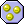
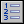

设定分数
Game
Maker有一个内置的分数机制，分数通常显示在窗口标题中，你可以使用这个动作更改分数，只需要输入一个新的分值。如果你想要增减得分，请将相对复选框打钩

如果分数为某值
绘制分数
这个动作可以在屏幕上绘制出分数的值， 您需要指定绘制的位置以及在分数之前显示的内容。分数会用当前字体绘制出来，这个动作只能在对象的绘制事件中使用

显示高分榜
清除高分榜
这个动作会清除高分榜
设置生命数
Game
Maker有一个内置的生命系统。使用此操作，您可以更改剩余的生命数。通常你在游戏开始时将它设置为某些值，如3，然后根据情况减少或增加生命。如果想要增加或减少生命数请勾选相对复选框。生命数小于等于0时会触发“生命为0”事件
如果生命为某值
此动作可以检查生命是否已经达到了您指定的值，您可以指定一个数值，然后用这个动作判断分数是否大于，小于或等于这个值。
绘制生命数
这个动作可以在屏幕上绘制出生命数目， 您需要指定绘制的位置以及在命数之前显示的内容。分数会用当前字体绘制出来，这个动作只能在对象的绘制事件中使用
用精灵绘制生命数目
这个动作以图形的方式来显示生命。（就是相当于有几次玩的机会，一般游戏中会显示X5这样的字样表示你还有五次机会可以玩，死一次减一次机会）你可以使用小图形来显示（比如一个桃心代表一个人，五次机会就绘制五个桃心），你指定显示图形的位置以及用来显示的图形，这个动作必须放在绘制事件中。
设定健康值
Game
Maker有一个内置的健康值机制，值为100为满健康值，0为没有健康值，你可以使用这个动作更改健康值，只需要输入一个新的健康值。如果想要增加或减少生命数请勾选相对复选框。健康值小于等于0时会触发“hp为0”事件
如果健康值为某值
动作可以检查健康值是否已经达到了您指定的值，您可以指定一个数值，然后用这个动作判断健康值是否大于，小于或等于这个值。
绘制健康条
用这个动作可以绘制健康条，健康值为100时会绘制一个满的条状图，为0时会绘制出一个空的条状图。您可以指定健康条的位置和大小，以及血条和背景颜色。.
设置窗口标题
通常在游戏窗口的标题上会显示房间的名称和分数，用这个动作你可以更改窗口标题， 你可以指定是否显示生命数，健康值和分数。